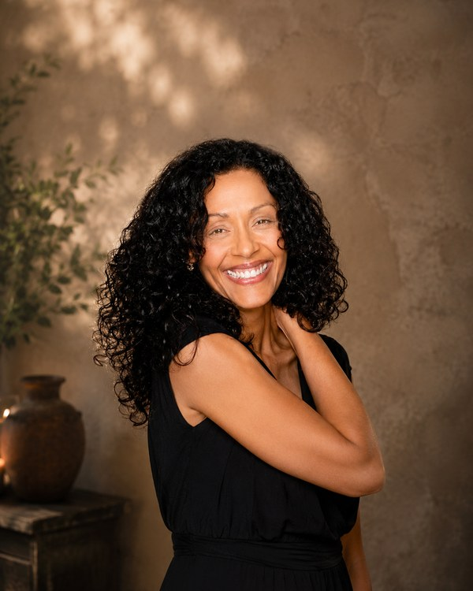
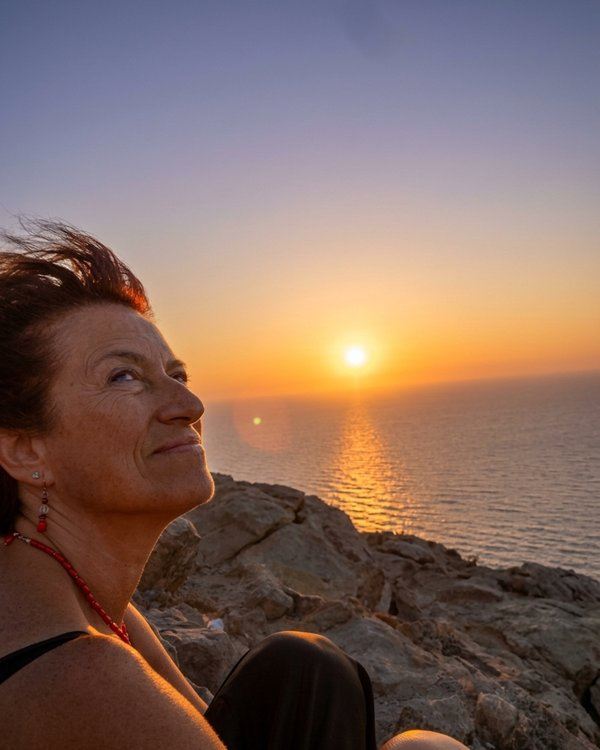
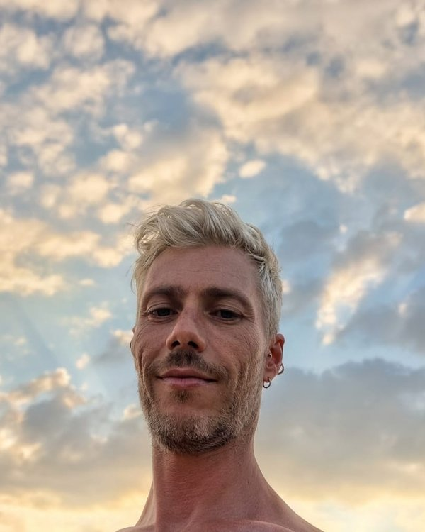

Maria Gorette
Co-fondatrice

Co-fondatrice de «Custodi della Sorgente»
«Ho scelto di cercare Dio dentro ogni cosa
perché Dio è Vita e il Sangue rivela questo Mistero
fin dalle prime origini.»
Mi riconosco nell'essere una ricercatrice dell'animo umano. Per questo scelsi la psicologia, scelsi di aprirmi al mio profondo sé, all'ascolto di me stessa e dell'Universo.
Dopo aver iniziato un percorso di riattivazione dei talenti secondo il metodo di Babà Bedi — che ringrazio con il cuore — scoprii il Reiki, diventando Master Reiki nel 2000. Da allora la mia esigenza interiore mi ha portata a «cercare Dio dentro le cose», ad entrare nelle cause delle malattie.
Oggi il dolore del sangue mi sta portando dentro il corpo fisico e dentro il corpo animico, più causale e più divino: sto entrando nel Sangue di Dio e nel Sangue dell'Anima di Dio nella materia umana terrena.
È un cammino di apertura e di ricerca, di approfondimento e di canalizzazione, che è iniziato nel 2014 quando sono stata attivata: una giornata memorabile di gioia, lacrime d'amore e gratitudine.
La mia aspirazione di «vivere in salute senza conflitti, in amore e pace» ha sempre più forza e certezza. È la mia aspirazione che nasce da una memoria ancestrale di cui respiro il ricordo, il sapore e il profumo. È la mia esperienza divina, che è nella mia anima sacra e nel mio cuore.
Per questo sono oggi portatrice di pace nel corpo e nel sangue, sistema che ha in sé tutte le energie e tutti i misteri della vita. La pace che ho scelto di portare è quella del corpo fisico che si risveglia alla salute, all'amore, al perdono e all'abbondanza di pace in ogni sua forma.
È un accompagnare le persone, senza distinzione alcuna, al risveglio della loro anima e del loro fisico nella materia terrena e nel tempo terreno. Non ci sono energie che non possano essere risvegliate: tutte le energie del sangue sono da risvegliare e guarire, trasmutare, epurare e liberare, per essere sé stessi in salute e in anima, con tutte le parti di anima e quindi di sé stessi.
È una voce interiore che, come in un sogno, poco tempo fa mi disse: «Ora entra nel sangue dell'essere umano e cerca Dio dentro ogni componente cellulare del sangue. Entraci dentro finché trovi Dio nella sua potenza sacra creativa, nel suo respiro e nel suo cuore. Poi sarai pronta ad essere creatrice di meditazioni che attiveranno le persone ad entrare nel loro sangue per risvegliare e guarire i loro DNA dalle loro memorie antiche, passate e ancestrali fino a cinque generazioni, in modo da trasmettere la pace in un cuore di pace fino a cinque generazioni future.»
Da quel giorno il mio sangue è in trasmutazione e in epurazione dalle mie sofferenze entrate nel mio sangue, nel mio liquor e nel mio midollo. Il mio bacino di donna è stato epurato e liberato da tante memorie di ogni dimensione. Forse era un sogno, forse una mia proiezione, ma oggi si può entrare nel sangue per portare la scelta di salute e di pace affinché il sangue si liberi e si risvegli alla vita di ogni suo componente.
Le mie scelte continuano ad essere nel sacro intento di entrare nel divino respiro del Padre e della Madre di ogni energia dell'Universo, per portare pace e abbondanza di pace in ogni cuore e in ogni terra.
La mia meditazione sul sangue è un primo passo per entrare nel sangue del proprio diritto di esistere. Perché si può anche non risvegliare questo diritto, ma senza questa attivazione non possiamo diventare costruttori di pace nel mondo e nelle persone che abbiamo nel cuore e nel nostro DNA di sangue.
Per essere costruttori di pace tra gli uomini sulla terra, bisogna che la terra sia in anima con l'anima di esseri umani che scelgono la pace dentro sé stessi. L'essere umano, per essere in anima con la Terra, deve aver risvegliato e guarito la proprietà terra interna, per poi essere in pace sia dentro che fuori, nel pianeta Terra.
Ma la terra è anche il sangue, perché ha dentro di sé tutto il vissuto terreno di ogni esperienza e di almeno cinque generazioni. Per questo è indispensabile entrare nel proprio sangue per essere in salute, in vitalità e in potenza materiale concreta, per costruire pace in ogni dimensione e in ogni tempo.
Questo è il mio primo dono.
«Credo che ogni essere umano
custodisca dentro il proprio Sangue
i Diritti sacri di Salute, Amore e Pace.
La mia missione è di accompagnare al "risvegliarsi"
nella propria Sacra Luce della Vita.»
Conosci anche gli altri co-fondatori de Custodi della Sorgente.

Co-fondatrice

Co-fondatore